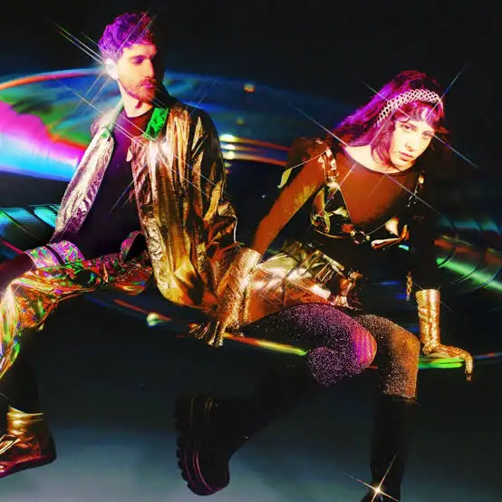

Magdalena Bay is an American alternative pop duo formed in 2016 from Miami, Florida, and currently based in Los Angeles, California. The duo consists of Mica Tenenbaum and Matthew Lewin, who met in high school.
This duo is one of my favorite bands due to their unique sounds. They utilize synth, and sound effects into their music. The lead singers voice is also very calming.
Magdalena Bay 